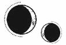

CAPÍTULO 22
Cuatro años antes
Víspera del solsticio, 1785 PD
En la meseta más alta de la isla Este, cerca de la Academia de Alquimia, se alzaba una de las pocas casas independientes de las islas paladinas.
Solis Splendor, la vieja mansión de la familia Bayard, era una de las últimas supervivientes del gran crecimiento arquitectónico de la ciudad. Mientras que la mayor parte de la urbe había cedido ante las inmensas torres interconectadas y cada vez crecía más alto, los Bayard habían decidido mantener su hogar intacto en el lugar en que se construyó. Las nuevas familias adineradas habían conquistado los cielos, pero, en Solis Splendor, jamás intentaron seguir sus pasos. Los Bayard se conformaban con vivir a la sombra de la Academia de Alquimia y la Torre.
Los Bayard estaban tan presentes en la Academia que Helena a veces olvidaba que no vivían allí y que poseían una gran fortuna.
Pese a que la guerra no les permitía cuidar de la casa tanto como merecía, la Solis Splendor, convertida en un asilo para los convalecientes, seguía siendo un edificio hermoso e imponente. Sus espaciosas estancias estaban repletas de camas reservadas para aquellos que habían resultado heridos y no podían volver al campo de batalla. Así, el Cuartel General no se saturaba. Rhea Bayard ya llevaba un tiempo cuidando de los heridos cuando su propio marido se convirtió en un residente más.
Helena se había detenido al pie de la escalera que conducía a la puerta principal para armarse de valor. Hacía tanto frío que no sentía la nariz, y los dedos se le habían entumecido pese a usar guantes de piel de cabritillo. Era el primer día de invierno, pero llevaba meses haciendo un frío terrible.
Se suponía que la celebración del solsticio de invierno giraba en torno a la esperanza, aunque, por mucho que los días se hicieran más largos o cálidos, confiar en que vendrían tiempos mejores resultaba difícil tras cinco años en guerra.
Cuando Helena ya no pudo soportar más el frío, subió los escalones y llamó con timidez a la puerta.
Sebastian Bayard, el tío de Lila y de Soren, abrió de inmediato. Era un hombre alto y esbelto, con la tez y el cabello tan blancos que casi era imposible distinguir uno de otro. El único color que contrastaba con su palidez era el azul claro de sus ojos, que siempre parecían buscar algo que no estaba ahí.
Entre otros méritos, destacaba por haber servido al principado Apollo como su paladín primero, pero, desde que estaba en la reserva, permanecía siempre en un trágico estado de alerta, como si fuera un perro esperando el regreso de su amo.
—Helena —dijo invitándola a pasar—, nos alegramos de que hayas podido venir. Sé que Rhea tenía la esperanza de verte.
La chica entró en la cálida casa sintiendo un nudo en el pecho y, aunque se quitó el abrigo, se dejó los guantes puestos.
Había varios niños repartidos por la estancia, silenciosos y macilentos, pero con la mirada llena de vida. Algunos eran tan pequeños que no habían conocido un mundo sin guerra y, pese a que estaban acostumbrados a no molestar a los adultos y tener cuidado, el solsticio no había dejado de ser un momento mágico para ellos.
Las estancias principales seguían siendo funcionales y estaban abarrotadas de personas. Algunas iban en silla de ruedas, caminaban con muletas o tenían alguna parte del cuerpo vendada, mientras que otras, si bien gozaban de buena salud, no mantenían así su estado de ánimo. El ambiente de la fiesta nada tenía que ver con el que la acogedora luz y calidez de la estancia o la música alegre del gramófono intentaban crear, pues todos charlaban en voz baja y sombría.
—Por fin has llegado. —Lila se hizo oír de repente por encima del murmullo cuando se levantó del extremo opuesto del salón.
Llevaba el pelo rubio recogido, como siempre, en una corona trenzada alrededor de la cabeza, un peinado que le hacía parecer todavía más alta de lo que ya era. Aunque los distintos grupos repartidos por el salón se fueron apartando para que pasase, esquivó sillas, piernas extendidas y mesas dando ágiles saltitos con su resplandeciente pierna protésica en una exhibición ostentosa y nada propia de ella; era evidente que Lila se desesperaba por demostrar que ya estaba recuperada y lista para regresar al campo de batalla.
Faltaban tres días para que el Consejo tomara una decisión. Se celebraría una sesión plenaria durante la cual se dictaminaría si Lila estaba preparada ya para retomar sus tareas como paladina primera. Dado que Helena era sanadora y una de las alquimistas que habían participado en la creación de la base de titanio de su prótesis, ella era una de las personas encargadas de decidir sobre el asunto.
Lila valoró la expresión de Helena en un abrir y cerrar de ojos.
—Pareces estar a punto de morir congelada. Ven conmigo. Luc ha encendido un fuego y te ayudará a calentarte.
Se detuvieron ante el grupo reunido frente a la chimenea con el que Lila había estado hasta hacía un momento. Todos formaban parte del mismo batallón. En el centro, como un colegial que jugueteaba con el fuego, se encontraba Luc, el principado bendecido por Dios. Chasqueó los dedos y las llamas se transformaron en pequeños acróbatas que bailaban por los leños mientras iluminaban su rostro.
Luc era mucho más esbelto y bajito que la mayoría de los miembros de su grupo, a excepción de un par de chicas. Incluso el gemelo de Lila, Soren, le sacaba un par de centímetros; y eso que todo el mundo lo consideraba demasiado bajo para ser paladín.
Siempre se había dicho que la estatura de los piromantes era menor que la de la media, pero las malas lenguas aseguraban que el motivo por el que los principados iban menguando con cada generación se debía a que la tradición dictaba que se casaran con alguien todavía más bajito que ellos.
Helena no sabía nada de la madre de Luc, su estatura era un misterio. Había muerto después de sufrir una larga y devastadora enfermedad cuando el chico todavía era demasiado joven, así que apenas se acordaba de ella.
—Hacedle un hueco —les pidió Lila antes de animarla a entrar en el círculo—. Ahora mismo te traigo un poco de vino caliente para que entres en calor.
—Creo que nunca la había visto mostrarse tan servicial —dijo uno de los chicos con una sonrisilla cuando volvió a desaparecer.
Helena no estaba segura de saber cómo se llamaba. Era uno de los nuevos, un experto en defensa. Su predecesor había muerto en la batalla contra Blackthorne, la misma que le había costado la pierna a Lila.
—Cierra el pico, Alister —dijeron Luc y Soren al unísono.
Un destello rabioso surcó los ojos de Luc, mientras que Soren pareció crecer como una sombra siniestra justo a su espalda. El grupo entero miró a Alister con censura.
—Estaba de broma —dijo el chico, que se movió incómodo y esbozó una sonrisa forzada—. Además, todos actuaríamos igual que ella en caso de necesitar convencer al Consejo de que nos dejaran volver al combate. Lo que no entiendo es por qué está tan preocupada. Podría haber perdido también un brazo y seguiría luchando mucho mejor que la mayoría de nosotros.
Soren se relajó y puso los ojos en blanco, pero Luc mantuvo la mirada clavada con firmeza en el fuego.
Penny Fabien encogió las piernas hacia un lado y, tras encontrarse con la mirada de Helena, dio unas palmaditas en el espacio que dejó junto a Luc. Helena vaciló.
Si se sentaba con ellos, en unos pocos días Ilva Holdfast la llamaría para «charlar un rato». Entonces, durante la conversación, la mujer acabaría hablando de lo delicada que era la situación en aquellos momentos. Le recordaría que, a veces, había que hacer sacrificios. Que también, a veces, la forma de demostrar que alguien te importa consiste en mantener las distancias. Luego, hablaría sobre la lealtad, sobre los miembros de la Llama Eterna que habían apoyado a los Holdfast durante generaciones. El principado tenía que cumplir con ciertos estándares y sería terrible para la causa que la fe que depositaban en Luc se tambaleara si este ponía a ciertas personas por delante de otras.
Helena negó con la cabeza y dio un paso hacia atrás mientras se excusaba en voz baja para ir a buscar a Lila.
La siguiente estancia en la que entró estaba más tranquila. Los heridos que allí descansaban no le prestaron ninguna atención.
Entre ellos, estaba el antiguo general Titus Bayard. Aunque nunca había llegado a ser paladín, era mucho más alto y robusto que su hermano y tenía la amplia frente surcada de arrugas. Había servido para la Llama Eterna como jefe militar durante la mayor parte de la vida de Luc, entrenando y aprobando la incorporación de nuevos miembros, incluidos sus propios hijos, asignándoles sus respectivos puestos de combate.
En ese momento, estaba enrollando una madeja de lana entre sus enormes manazas, despacio, con la misma meticulosidad y atención que les había dedicado a sus anteriores obligaciones.
—Hola, Titus —lo saludó Helena en voz baja y tranquila mientras se arrodillaba a su lado—. Soy la sanadora Marino, ¿te acuerdas de mí?
No dio señales de haberla oído. Ya solo respondía ante Rhea.
—¿Te importa si le echo un vistazo a tu cerebro? Será un toquecito de nada y te prometo que no te dolerá.
Tras recibir un gruñido quedo, la chica se quitó un guante y trazó la amplia cicatriz que le nacía en la sien y le desaparecía bajo el cabello. Entonces dejó que la resonancia brotara de la yema de sus dedos para desplegar una red de energía con la que examinar los tejidos, el cráneo y el cerebro de Titus, desesperada por encontrar algún cambio.
Pero todo seguía igual.
Físicamente, Titus no tenía ni un rasguño. De hecho, salvo por su inactividad, ni siquiera su cerebro presentaba problema alguno. Helena había pasado días regenerándole los tejidos con sumo cuidado y atención a cada detalle para salvarle la vida. El problema era que lo había dejado atrapado dentro de su propia mente y no sabía cómo sacarlo de ahí. Si es que todavía quedaba algo del hombre que una vez fue.
—Eres un ejemplo de fortaleza —comentó con tono cordial mientras le colocaba el pelo para volver a disimularle la cicatriz.
Apartó la vista por un momento de la madeja de lana para ofrecerle un amago de sonrisa y, cuando sus miradas se encontraron, otra punzada de remordimiento atravesó el pecho de Helena. Se moría por decirle que lo sentía, que había intentado salvarlo, que no quiso dejarlo en ese estado.
—Helena.
El estómago le dio un vuelco cuando se giró y vio a Rhea Bayard. La mujer de Titus era alta, de rasgos largos y afilados como los de un cuervo. Soren tenía los mismos ojos verdes y encapotados que ella. Según se decía, había sido una de las mejores alquimistas de la Academia, pero se había retirado para casarse y tener hijos.
—Has entrado tan silenciosa que ni siquiera te había visto. ¿Has hablado ya con Titus? —Rhea sonreía, pero su expresión era tensa.
Helena ya sabía que ese era el motivo por el que la habían invitado. En su desesperación, Rhea confiaba en que Helena encontrara la manera de curar a Titus. Solía llevarlo al hospital casi todos los días, incluso después de que los demás se dieran por vencidos, pues estaba convencida de que el tiempo y los avances científicos acabarían permitiendo que alguien con las habilidades de Helena diera con la clave para devolverlo a su ser.
Helena había temido que Rhea le echara la culpa por no haber conseguido curarlo, pero su inquebrantable fe en ella a veces conseguía hacerla sentir incluso peor.
—Sí, ahora mismo —dijo, aunque sabía que eso no era lo que le había preguntado—. Lo estás cuidando de maravilla.
La mujer perdió la sonrisa cuando Helena no dijo nada más, bajó la vista y se retorció los dedos.
—Bien. Bien. Sí, me alegra oír eso. —Rhea carraspeó y se acercó a una estantería para coger un paquete y ofrecérselo a la chica—. Es un placer verte por aquí. Te has perdido el inicio de las festividades, pero esto es para ti.
Helena contempló el regalo que le ofrecía mientras se le calentaban las mejillas.
—Ay, no sabía… No esperaba que fuerais a intercambiar… regalos. No he traído…
—Has protegido a mis hijos, así que estamos en paz.
Helena se sentó y tiró del cordel para abrir el paquete. Dentro, había un jersey de lana verde, tejido con unos intrincados diseños en relieve que imitaban los símbolos alquímicos.
—Vaya, es precioso. Pero es demasiado, no puedo aceptarlo.
Rhea parecía satisfecha por haberla dejado sin palabras.
—No sabía cuáles eran tus colores o tus elementos aparte del titanio, pero Lila me comentó que te gusta salir a la ciénaga, así que pensé que el verde encajaría contigo.
—Has tenido que pasar horas tejiendo.
—Me viene bien tener las manos ocupadas —suspiró Rhea—. Mis padres provienen de las llanuras de Novis, donde hay muchas ovejas, y mi madre siempre me manda alguna que otra madeja con sus cartas para convencerme de que me lleve a Titus a vivir con ellos. —Apretó los labios—. Estoy segura de que le encantaría estar rodeado de animales, pero tenemos a los gemelos aquí. Además, si nos vamos, ¿cómo encontraremos una cura para su dolencia?
Helena acarició los diseños del jersey con nerviosismo.
—Intentaré seguir investigando para ver si encuentro algo nuevo.
—Gracias… —empezó Rhea, aunque enseguida se interrumpió—: ¡Titus, no! Eso no se hace.
La mujer corrió a quitarle a Titus la muleta que le había robado a otro de los convalecientes.
—¿Te importaría ir a buscar a Sebastian? —le pidió a Helena en un tono alegre algo forzado mientras se peleaba con su marido.
Aunque Titus solía ser cuidadoso con los demás, era el doble de grande que ella y a veces se dejaba llevar por sus rabietas.
Helena buscó a Sebastian por todas las habitaciones hasta que lo encontró en el estrecho vestíbulo que comunicaba con la puerta principal, donde fingía actuar como anfitrión para evitar a los demás.
—¿Vienes por Titus? —le preguntó el hombre, que había adivinado por qué lo buscaba sin que ella hubiera tenido siquiera que abrir la boca.
Desapareció en un instante, y Helena se quedó allí parada, agarrando el jersey de lana. Su oportunidad para escapar estaba clara ante ella; nadie repararía en su ausencia si se marchaba en ese momento.
—¿Ya te vas?
Miró a su alrededor en actitud culpable y encontró a Luc detrás de ella, con dos tazas de vino caliente en las manos.
—Pronto empiezo otro turno —dijo, agradecida por no tener que mentir. Luc siempre se había burlado de ella por ser una pésima mentirosa. Su expresión, según le había dicho una vez, era como un libro abierto.
—¿Cómo es que estás trabajando en un día como hoy? —preguntó desconcertado.
—No es lo normal, pero todo el mundo quería tener el solsticio libre y, como saben que la tradición no está tan extendida en el sur, dieron por hecho que yo no tendría planes, y… acertaron. Al fin y al cabo, no tengo a nadie con quien celebrarlo.
—¿Y yo no cuento? —dijo él arqueando las cejas.
—Por supuesto que cuentas, pero estás ocupado. —Se obligó a sonreír—. Y todos quieren pasar el día contigo.
El chico se sentó sobre el estrecho banco que había junto a la puerta y le ofreció una de las tazas.
—Quédate un poco más. No llevas ni diez minutos aquí.
Lanzó una mirada rápida hacia el resto de las habitaciones para ver si alguien había reparado en ellos, aunque estaba segura de que la ausencia de Luc no tardaría en notarse. Si Soren y Lila no habían salido ya en su busca, seguro que era porque sabían dónde estaba. Luc había debido de pedirles algo de espacio.
Helena oía a Lila en la habitación contigua, pues había levantado la voz para contar con teatralidad la historia de Orion y la gran batalla que había librado contra el Nigromante durante la Primera Guerra Nigromántica. Los niños se habían acercado desde todos los rincones de la casa para escucharla.
Lila ejercía una misteriosa atracción sobre ellos. Podría llevar una armadura de cuerpo entero cubierta de sangre y aun así los pequeños seguirían pidiéndole que los cogiera en brazos. Ella accedería con gusto, por supuesto, e incluso se pondría a jugar con ellos fingiendo que no los veía cada vez que se bajara el visor del yelmo.
Soren estaba cerca de la entrada, escuchando a su hermana con sumo interés pese a que ya había oído esa historia miles de veces. Helena lo pilló mirándolos por el rabillo del ojo, pero enseguida simuló no haberlos visto.
Aquel asalto había estado calculado meticulosamente.
—Te echo de menos —le dijo Luc cuando ella aceptó la taza, resignada a tener que aguantar una reprimenda de Ilva. El chico le dio un suave codazo cuando se sentó junto a él—. Siempre que intento hablar contigo, estás ocupada o te diriges a alguna parte.
—Bueno, piensa que mi trabajo empieza cuando el tuyo termina. Estoy segura de que es por eso —se defendió agarrándose con fuerza a la taza—. En cualquier caso, ya sabes que siempre voy a estar aquí cuando me necesites.
Dio un trago de vino caliente, que sabía amargo y apenas llevaba especias; el desabastecimiento estaba dejando las alacenas vacías.
—Lo mismo te digo. Que seas sanadora no significa que no merezcas descansar un poco. Si te están asignando demasiados turnos, dímelo y me aseguraré de que lo arreglen.
Helena negó con la cabeza.
—No te preocupes, Ilva siempre cuida de mí.
Al fin y al cabo, Ilva la consideraba una pieza clave en la guerra. Era la única sanadora de la Llama Eterna, y, aunque no podían permitirse perderla, tenían que sacar el máximo partido a sus habilidades. Todas las manos con las que contaban eran imprescindibles.
—Me alegra saber que existe una persona en el mundo por la que no me tengo que preocupar —dijo Luc cerrando los ojos por un instante en un gesto de puro agotamiento.
Lila levantó la voz para darle aún más teatralidad a la historia:
—Los muertos los habían rodeado. Orion y sus fieles paladines permanecían espalda contra espalda, envueltos en la más negra oscuridad salvo por el fuego que manaba de las manos de Orion…
—Vas a dejar que Lila vuelva al campo de batalla, ¿no? —le preguntó Luc con un suspiro.
—Ya está lista —respondió Helena sin levantar la vista de la taza—. No hay motivos para impedirle luchar. Además, es la mejor en lo suyo. En mantenerte con vida, quiero decir.
Los niños jadearon al unísono en la habitación contigua cuando Lila pasó a describir cómo los paladines se habían enfrentado a una horda tras otra de necrómatas mientras Orion le plantaba cara al Nigromante en solitario.
—¿Y si te digo que ese es precisamente el motivo por el que no quiero que la dejéis luchar? —confesó Luc con un hilo de voz.
Helena lo miró y se dio cuenta de que ahora era él quien evitaba su mirada con un gesto obstinado.
—Cuando juró sus votos, pensé que hacer lo mismo por ella era lo mínimo si iba a estar ahí para protegerme siempre. —Rozó el borde de la taza con el anillo de ignición que llevaba en el dedo—. Pero no siempre puedo… velar por su seguridad. Ella actúa como si terminar destrozada por mí fuera parte de su trabajo. Me ha salvado la vida tantas veces que ya he perdido la cuenta, pero tengo que aceptarlo porque se supone que eso es lo que se espera de ella —frunció el ceño—, porque es lo que me permitirá ganar la guerra, y entonces todo el sufrimiento habrá merecido la pena. Justo como pasó con Orion. El problema es que yo no soy capaz de pensar así. No soporto que Lila tenga que seguir llevándose todos los golpes por mí.
Tragó saliva con fuerza.
Cargaba con demasiadas personas y demasiadas vidas sobre los hombros. El mundo solo tenía ojos para él, a la espera de que la intuición lo llevara a obrar un milagro, igual que había hecho Orion en el detallado relato con el que Lila no dejaba de arrancarles gritos de asombro y vítores a sus oyentes.
La sensación de estar fracasando atravesaba a Luc como una falla geológica a punto de romperse. Cada muerte, cada cicatriz que marcaba a Lila y a Soren, lo empujaba más y más hacia el borde del precipicio.
—Todo el mundo me dice lo mismo —continuó—. «Ya casi está hecho», «Todo suele empeorar antes de mejorar» o «Esta es la prueba de fuego», así que tengo que demostrarles que puedo con ello…, pero ¿y si me supera? ¿Y si hemos acabado así por mi culpa?
Luc la miró con una expresión afligida que reflejaba con total claridad la culpa que lo reconcomía, así como las dudas que, como principado, no debería sentir. Se suponía que debía ser una figura imperturbable, la viva imagen de la Fe, la divinidad de Sol reencarnada.
Dudar de sí mismo no era algo que pudiera permitirse, porque supondría traicionar la confianza de la gente que estaba dispuesta a morir por él sin pensárselo dos veces.
—¡Un divino infierno de llamas blancas estalló a su alrededor y consumió a todos y cada uno de los necrómatas que los atacaban! —bramó Lila.
Allí sentado junto a Helena, Luc no era más que un huérfano que cargaba con el peso de un legado centenario sobre los hombros y que no tenía la menor idea de cómo ponerle fin a la guerra solo.
—Si yo creo en ti no es porque alguien más me haya dicho que debo hacerlo —dijo Helena negando con la cabeza—. Decidí apoyarte porque jamás he conocido a una persona más valiente o amable que tú, Luc. Eres un modelo a seguir para todos nosotros. Y si estamos contigo no es porque nos hayas engañado para ganártelo. —Le tocó fugazmente la muñeca con la mano enguantada—. La razón por la que tenemos fe en ti es porque no hay nadie más capacitado para encabezar esta lucha que tú.
Él negó con la cabeza.
—Orion lo estaba, al igual que el resto de mis antepasados. A ninguno le tocó enfrentarse a una situación como la nuestra. Cuando un nigromante aparecía, ellos se encargaban de él sin apenas despeinarse, pero yo lo he intentado todo y no soy capaz de…
—Sus guerras fueron más simples que esta —lo interrumpió ella sin miramientos—. Ninguno tuvo que afrontar algo como esto. Puede que Orion estuviera en una situación parecida, pero ¡incluso él lo tuvo más fácil! Mira lo que Lila acaba de decir. Prendió un valle entero con sus llamas y no se detuvo hasta llegar a la cima de las montañas. Aunque tuvieras el poder de hacer algo así, todavía tendrías que contar con que te encuentras en una ciudad en la que hay miles y miles de habitantes. Orion solo tuvo que luchar contra un nigromante. No tienes forma de saber cómo habrían reaccionado tus antepasados ante una guerra como esta. Estás haciéndolo lo mejor que puedes, y, si los dioses están tan ciegos como para no verlo, pues…
—No digas esas cosas —replicó él sin dejarle terminar—. No ayuda nada.
Helena cerró la boca de golpe. No sabía qué más decir, nada parecía servir.
—Allí donde puso las zarpas el Nigromante, no dejaba más que cenizas —concluyó Lila al llegar al punto álgido de la historia.
—¿Cómo se llamaba el Nigromante? —preguntó una vocecilla.
—Nadie lo sabe —respondió la chica con aire misterioso—. A quienes lo sabían los mató. Bueno, ¿por dónde iba? Ah, sí, Orion, envuelto todavía en aquellas sagradas llamaradas solares, recurrió a su piromancia para avivarlas todavía más.
—Pero ¿no habías dicho que las oleadas de fuego lo habían arrasado todo salvo a Orion y sus paladines? —la volvió a interrumpir la vocecilla.
Los demás oyentes rieron y chistaron a partes iguales.
—Bueno, pero resultó que un brasero de hierro había conseguido resistir su azote —dijo Lila con fingida solemnidad—, así que Orion depositó el fuego sagrado en su interior e hizo un juramento solemne ante sus paladines bajo el sol naciente. Juró que, mientras su linaje permaneciera vivo, los Holdfast no permitirían que el fuego se extinguiera jamás y que utilizarían sus llamas para acabar con la corrupción de la nigromancia allí donde apareciera y…
—Yo pensaba que había una piedra —intervino la vocecilla por tercera vez. Según parecía, se negaba a tolerar que la mandaran callar—. En la versión que nos cuenta mi papá, siempre habla de una.
—Ya, bueno, en esta versión no hay piedras —se apresuró a decir Lila para tratar de terminar la historia—. En fin, que…
—Pues a mí me gusta más la versión de la piedra —apuntó otra voz infantil.
Helena dejó la taza sobre el banco y miró a Luc, que se había quedado absorto escuchando a Lila discutir sobre la historia de su familia con un grupito de niños.
—Tengo que irme ya, Luc —le dijo Helena—, pero no pierdas la esperanza. Siempre estaremos aquí para ti. Vendrán tiempos mejores.
—Lo sé —respondió él tras ofrecerle una sonrisa débil y un asentimiento desganado.
Cuando Helena salió de la casa, las estrellas del invierno salpicaban el cielo casi desprovisto de lunas, pero estas quedaron ocultas tras la neblina que salió de sus labios al dejar escapar un profundo suspiro.
Desvió la mirada hacia la Torre de Alquimia, que seguía y seguiría estando siempre iluminada por la Llama Eterna de Orion.
Luc era el único Holdfast que quedaba con vida para cumplir la promesa de mantener viva su luz, pero, tras cinco años, la guerra contra el cada vez más numeroso ejército de necrómatas se había convertido en una batalla de desgaste que no iban a poder ganar ni con todos los sanadores, fuegos sagrados o paladines del mundo.
Helena observó aquel faro de luz con el corazón en un puño mientras contemplaba la posibilidad de que un día se apagara, de que Luc fuera el último Holdfast si nadie encontraba la forma de salvarlo de su destino.
Se miró las manos enguantadas mientras abría y cerraba los dedos lentamente. Luego, inspiró hondo.
—Prometiste que harías lo que fuera por él.